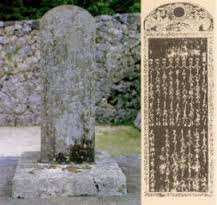

Title
Subtitle
Okinawan Script
第001課: Okinawan Script
 Okinawan, うちなーぐち (沖縄口), is a Japonic language spoken by nearly 100,000 people in and around the main island of Okinawa. It is also spoken in the islands in the near vicinity, which includes the Kerama Islands (慶良間諸島), Kume Island (久米島), Tonaki Island(渡名喜島), Aguni Island(粟国島), Ojima Island(奥武島), Hamahiga Island (浜比嘉島), Henza Island (平安座島)、Miyagi Island宮城島, and Ikei Island (伊計島). For the purpose of this discussion, Okinawan will be referred to as うちなーぐち (uchinaaguchi).
Okinawan, うちなーぐち (沖縄口), is a Japonic language spoken by nearly 100,000 people in and around the main island of Okinawa. It is also spoken in the islands in the near vicinity, which includes the Kerama Islands (慶良間諸島), Kume Island (久米島), Tonaki Island(渡名喜島), Aguni Island(粟国島), Ojima Island(奥武島), Hamahiga Island (浜比嘉島), Henza Island (平安座島)、Miyagi Island宮城島, and Ikei Island (伊計島). For the purpose of this discussion, Okinawan will be referred to as うちなーぐち (uchinaaguchi).
As with any language, Okinawan has dialects. The main dialect of うちなーぐち is the Shuri-Naha variant, which had been the de facto language of the Ryukyuan Kingdom. On the same island of Okinawa proper, there is another separate Japonic language spoken called Kunigami (国頭語), but that is another topic in and of itself.
Despite what the majority of Japanese people think, うちなーぐち is indeed a separate language, although it undoubtedly has common origin with Japanese.
ウチナーグチの表記
うちなーぐち is and has traditionally been written with a mix of 漢字 and ひらがな in ways very similar to Japanese spoken on the mainland.
A little after ひらがな had established in other places of Japan in the 8th~9th centuries A.D, it was passed down to the Ryukyuan Kingdom during the reign of King Shuten (舜天王) in the early 1200s. Due to proximity with China, there's no doubt that the people of Okinawa had contact with 漢字 earlier than this time.
It took a while for ひらがな to disseminate, but very famous works such as the おもろさうし, which was published in the 1500s as a compilation of song and poetry, were created in the kingdom's heyday. Due to Japanese influence, more 漢字 became used in everyday life. However, as was the case in other parts of the Japanese archipelago, access to 漢字 education was limited to wealthy individuals.
 The oldest attestation of 漢字かなまじり in うちなーぐち is found inscribed on the 玉陵の碑文, which was made in the year 1501.
Once Okinawa was invaded by the Satsuma Han (薩摩藩) of Japan in 1609, うちなーぐち ceased to be the language of administration. It was replaced by Japanese and 漢文, which was still used in bureaucratic situations. うちなーぐち as a literary language would still flourish until the Meiji Restoration, in which strict language reform was enacted to eradicate local dialects. Okinawa's incorporation into the Japanese prefectural system in 1879 spelled doom for うちなーぐち as a written language until American intervention in 1945 following the end of World War II.
When うちなーぐち is written, カタカナ is avoiding because it gives a "foreign nature" to the nature deemed prejudicial to うちなーぐち speakers. Sadly, however, because it has undergone any sort of standardization, there are only ad hoc ways of spelling the language, none of which are truly satisfactory as you will soon see.
Sound Issues
As should be expected, うちなーぐち underwent sound changes Japanese did not. Consequently, this means that the ひらがな syllabary is not adequate in writing every possible contrasting phoneme in うちなーぐち.
One major difference between the two languages is the use of glottal stops before vowels. In Japanese it is typically the case that word initial vowels are preceded by a glottal stop. For example, 音 and 夫 are pronounced as [ʔo̞to̞] and [ʔo̞t̚o̞] respectively. The contrasting feature is consonant gemination, and the existence or absence of a glottal stop does not result in unnatural speech. In fact, glottal stops unilaterally never show up within utterances. So, この音 would be rendered as [ko̞no̞ o̞to̞].
In うちなーぐち, these two words are respectively [ʔutu] and [utu]. The glottal stop is a contrasting phoneme in うちなーぐち. Thus, it appears regardless of whether it is at the beginning or in the middle of an utterance. How can this be represented in ひらがな, which makes no such distinction?
Professor Funazu Yoshiaki (船津好明) devised a modified ひらがな syllabary with new Kana to fit うちなーぐち. One problem, however, is the fact that all うちなーぐち speakers know Japanese. Issues have been raised concerning the use of existing characters for different purposes than in Japanese. Nevertheless, his system, which is called 新沖縄文字 (New Okinawan Letters), is progressively becoming more popular. Oddly enough, though, his orthography only applies to ひらがな.
The vowel Kana look like this in his new orthography. The column in red shows the vowels with an initial glottal stop. The lower column shows the vowels without a glottal stop.

One problem is that を in Japanese may refer to the sound /wo/. Using it for /ʔo/ is problematic for this bilingual community. Also, the lower column is never used for non-glottal vowels within words by orthographic convention. Also, although /a/ is possible, it only shows up inside words.
ʔ does not occur inside words. So, no distinction is felt to be necessary. Thus, though ʔ may not be present, the upper column and not the lower is used. You would need to know word boundaries to know when い corresponds to /ʔi/ and when it corresponds to /i/.
For a community that seeks to save its language from dying out, not having a one-to-one phoneme correspondence is the biggest criticism of this system. However, the idea was that using too many new characters may turn off monolingual Japanese speakers most likely to use the new orthography.
Long Vowels
Another issue is how to write long vowels in うちなーぐち. Not that Japanese is completely standardized on this front either, but the use of ー to lengthen vowels has been deemed by some to be a somewhat derogatory.
Substituting small sized Kana―ぁ, ぃ, ぅ, ぇ, ぉ―is implemented by some speakers. However, another motivation by some is based on differences in opinion as whether うちなーぐち syllable structure should be treated as syllabic or moraic. Nevertheless, it is most common regardless of orthography to represent long vowels with ー.
Competing Orthographies
There are four orthographies that have come about to write うちなーぐち, but all have come short from a true standardized means of writing うちなーぐち.
慣習的な表記法 (Historic Orthography): This a more conventional usage of ad hoc spellings found throughout Okinawa and shares most features with the other competing orthographies.
協議会による表記法 (Council Orthography): This orthography was proposed by the 沖縄方言普及協議会 (Council for the Dissemination of Okinawan Dialect).
琉球大学の表記法 (University of the Ryukyus Orthography): This is not meant to be used by actual people for writing in うちなーぐち. Rather, it implements only カタカナ and is meant for phonetic transcription.
新沖縄文字 (New Okinawan Letters): As been said before, this system was created by 船津好明. He devised it and first publicly used in his textbook on うちなーぐち called 美しい沖縄の方言. We will first see how the vowels and semi-vowels of うちなーぐち are written in these competing orthographies.
| 音 | 慣習 | 協議会 | 琉球大学* | 新沖縄文字 |
| [i] (initial) | い | ゆぃ | ヰ | い゛ |
| [u] (initial) | う・をぅ | をぅ | ヲゥ | |
| [e] (initial) | え・いぇ | ゆぇ | エ | え゛ |
| [o] (initial) | お・を・うぉ | を | ヲ | を |
| [ʔa] (initial)/[a] (elsewhere) | あ | あ | ア | あ |
| [ʔi] (initial)/[i] (elsewhere) | い | い | イ | い |
| [ʔu] (initial)/[u] (elsewhere) | う | う | ウ | う |
| [ʔe] (initial)/[e] (elsewhere) | え・いぇ | え | イェ | え |
| [ʔo] (initial)/[o] (elsewhere) | お・うぉ | お | オ | お |
| [ja] (initial) | や | や | ヤ | や |
| [ju] (initial) | ゆ | ゆ | ユ | ゆ |
| [jo] (initial) | よ | よ | ヨ | よ |
| [ʔja] (initial)/[ja] (elsewhere) | や | っや | イャ | |
| [ʔju] (initial)/[ju] (elsewhere) | ゆ | っゆ | イュ | |
| [ʔjo] (initial)/[jo] (elsewhere) | よ | っよ | イョ | |
Note: In the system developed by the University of the Ryukyus, ヰ, ヲゥ, エ, and ヲ are always used to stand for [i]. [u], [e], and [o] regardless. Thus, イ, ウ, イェ, オ are never used inside words.
拗音
We will now look at the consonant-(glide)-vowel Kana symbols used in the four orthographies. However, labialized sounds will be left for last.
| 慣習 | +a | +i | +u | +e | +o | +ja | +ju | +jo |
| k | か | き | く | け | こ | きゃ | ||
| g | が | ぎ | ぐ | げ | ご | ぎゃ | ||
| s | さ | し [ɕi] | す | しぇ [ ɕe] | そ | しゃ [ɕa] | しゅ [ɕu] | |
| dz | ざ | じ | ず | ぜ | ぞ | |||
| dʑ | じゃ | じ | じゅ | じぇ | じょ | |||
| t | た | てぃ | とぅ | て | と | |||
| d | だ | でぃ | どぅ | で | ど | |||
| tɕ | ちゃ | ち | ちゅ | ちぇ | ちょ | |||
| ts | つぃ | つ | ||||||
| n | な | に | ぬ | ね | の | にゃ | にょ | |
| h | は | ひ [çi] | ふ [ɸu] | へ [çe] | ほ | ひゃ [ça] | ひゅ [çu] | ひょ [ço] |
| b | ば | び | ぶ | べ | ぼ | びゃ | びゅ | びょ |
| p | ぱ | ぴ | ぷ | ぺ | ぽ | ぴゃ | ぴゅ | |
| m | ま | み | む | め | も | みゃ | みゅ | みょ |
| r | ら | り | る | れ | ろ |
Usage Notes:
1. This system particularly doesn't allow for the distinction between /dzi/ and /dʑi/.
2. Notice how this language lacks a lot of sound combinations that Japanese allows, but also note the sounds that it allows that Japanese does not.
| 協議会 | +a | +i | +u | +e | +o | +ja | +ju | +jo |
| k | か | き | く | け | こ | きゃ | ||
| g | が | ぎ | ぐ | げ | ご | ぎゃ | ||
| s | さ | し | す | しぇ | そ | しゃ | しゅ | |
| z | ざ | じ | ず | ぜ | ぞ | |||
| dʑ | じゃ | じ | じゅ | じぇ | じょ | |||
| t | た | てぃ | とぅ | て | と | |||
| d | だ | でぃ | どぅ | で | ど | |||
| tɕ | ちゃ | ち | ちゅ | ちぇ | ちょ | |||
| n | な | に | ぬ | ね | の | にゃ | にゅ | |
| h | は | ひ | ふ | へ | ほ | ひゃ | ひゅ | ひょ |
| b | ば | び | ぶ | べ | ぼ | びゃ | びゅ | びょ |
| p | ぱ | ぴ | ぷ | ぺ | ぽ | ぴゃ | ぴゅ | |
| m | ま | み | む | め | も | みゃ | みゅ | みょ |
| r | ら | り | る | れ | ろ |
Usage Note: This system has the same problems as the previous orthography.
| 琉球大学 | +a | +i | +u | +e | +o | +ja | +ju | +jo |
| k | カ | キ | ク | ケ | コ | キャ | ||
| g | ガ | ギ | グ | ゲ | ゴ | ギャ | ||
| s | サ | シ・スィ | ス | シェ・セ | ソ | シャ | シュ | |
| z | ザ | ヅィ | ズ・ヅ | ゼ | ゾ | |||
| dʑ | ジャ・ヂャ | ジ・ヂ | ジュ・ヂュ | ジェ・ヂェ | ジョ・ヂョ | |||
| t | タ | ティ | トゥ | テ | ト | |||
| d | ダ | ディ | ドゥ | デ | ド | |||
| tɕ | チャ | チ | チュ | チェ | チョ | |||
| ts | ツィ | ツ | ||||||
| n | ナ | ニ | ヌ | ネ | ノ | ニャ | ニュ | |
| h | ハ | ヒ | フ | ヘ | ホ | ヒャ | ヒュ | ヒョ |
| b | バ | ビ | ブ | ベ | ボ | ビャ | ビュ | ビョ |
| p | パ | ピ | ブ | ペ | ポ | ピャ | ピュ | |
| m | マ | ミ | ム | メ | モ | ミャ | ミュ | ミョ |
| r | ラ | リ | ル | レ | ロ |
Usage Note: This system allows for better transcription of dialectical pronunciation and sounds found in loanwords.
| 新沖縄文字 | +a | +i | +u | +e | +o | +ja | +ju | +jo |
| k | か | き | く | け | こ | きゃ | ||
| g | が | ぎ | ぐ | げ | ご | ぎゃ | ||
| s | さ | し | す | せ | そ | しゃ | しゅ | |
| z | ざ | じ | ず | ぜ | ぞ | |||
| dʑ | じゃ | じ | じゅ | じぇ | じょ | |||
| t | た | | | て | と | |||
| d | だ | | | で | ど | |||
| tɕ | ちゃ | ち | ちゅ | ちぇ | ちょ | |||
| n | な | に | ぬ | ね | の | にゃ | にゅ | |
| h | は | ひ | ふ | へ | ほ | ひゃ | ひゅ | ひょ |
| b | ば | び | ぶ | べ | ぼ | びゃ | びゅ | びょ |
| p | ぱ | ぴ | ぷ | ぺ | ぽ | ぴゃ | ぴゅ | |
| m | ま | み | む | め | も | みゃ | みゅ | みょ |
| r | ら | り | る | れ | ろ |
Usage Note: Rather than relying on combination of large size and small size Kana to represent sounds like to (てぃ), this system turns these combinations into a single Kana. Though they're only fusions of who they would otherwise be written, it gives a fairer representation of the phonemic structure of うちなーぐち. Either way, though, both writing small Kana (小書き) and modifying the Kana change the vowel of the character similarly to abugida writing systems.
唇音
Now we need to see how the labialized sounds are represented in these four orthographies.
| 慣習 | 協議会 | 琉球大学 | 新沖縄文字 | |
| ɰa | わ | わ | ワ | わ |
| ɰi | うぃ | うぃ | ヱィ | ゐ |
| ɰe | うぇ | うぇ | ヱ | ゑ |
| ʔɰa | わ | っわ | ウヮ | |
| ʔɰi | うぃ | っうぃ | ウヰ | |
| ʔɰe | うぇ | っうぇ | ウェ | |
| kɰa | くぁ・くゎ | くゎ | クヮ | |
| kɰi | くぃ | くぃ | クヰ | |
| kɰe | くぇ | くぇ | クェ | |
| gɰa | ぐぁ・ぐゎ | ぐゎ | グヮ | |
| gɰi | ぐぃ | ぐぃ | グヰ | |
| gɰe | ぐぇ | ぐぇ | ぐぇ | |
| ɸɰa | ふぁ | ふぁ | ふゎ | |
| ɸɰi | ふぃ | ふぃ | ふぃ | |
| ɸɰe | ふぇ | ふぇ | ふぇ | |
撥音
We also have to keep into account the uvular nasal sound found in Japanese, which is deemed by most scholars on Okinawan orthography to exist in うちなーぐち as well, though the assimilation rules are not exactly the same as Japanese. However, none of these rules are needed to represent this sound as these variant pronunciations are merely allophones not accounted for in the spelling, regardless of the orthography chosen.
| 慣習 | 協議会 | 琉球大学 | 新沖縄文字 | |
| ɴ | ん | ん | ン | ん |
| ʔɴ | ん | っん | ッン | |
Unlike Standard Japanese, うちなーぐち allows words to begin with ん, which is moraic/syllabic just as in Japanese. So, as should be expected, ʔɴ is possible and used, though this will be naturally hard for natives of Japanese to pronounce.
This last system is becoming progressively more popular and used, perhaps due to its use in a widely known textbook promoting the use of うちなーぐち. Whichever orthography you choose, so long as you realize that the pronunciation of Kana are for うちなーぐち rather than Japanese, getting used to using Kana differently in these manners should not be difficult.
Conventional spellings are the most ad hoc spellings and most likely to not give due justice to the actual pronunciation of the language. Due to the desire by native speakers to preserve their language, it is likely that the newest orthography developed by Professor Funazu will continue to be used more frequently.
Use of 漢字
Like Japanese, うちなーぐち has its own Sino-Japanese and native readings used for reading 漢字, but it is very important to understand how these readings are to be written in Kana for the majority of texts in うちなーぐち will have reading aids due to the lack of formal education for mixed script usage in the language. Texts are far more frequently left mainly in Kana for うちなーぐち because of this.
Consider the following text, which is the lyrics to the popular folk song 童神（わらびがみ）, with a rather ad hoc, conventional spelling that is still most prevalent in Okinawa. The readings of words not the same in Japanese are given in parentheses to the side of 漢字.
天(てぃん)からの恵（みぐ）み 受きてぃ此(く)ぬ世界(しげ)に
生まりたる産子(なしぐゎ) 我身(わみ)ぬむい育(すだ)てぃ
イラヨーヘイ イラヨーホイ
イラヨー 愛(かな)し思産子(うみなしぐゎ)
泣くなよーや ヘイヨー ヘイヨー
太陽(てぃだ)ぬ光受きてぃ
ゆーいりよーや ヘイヨー ヘイヨー
まさ勝さあてぃ給(たぼ)り
夏（なとぅ）ぬ節(しち)来りば 涼風(しだかじ)ゆ送(うく)てぃ
冬ぬ節（しち）来りば 懐(ふちゅくる)に抱(だ)ちょてぃ
イラヨーヘイ イラヨーホイ
イラヨー 愛(かな)し思産子(うみなしぐゎ)
泣くなよーや ヘイヨー ヘイヨー
月(とぅき)ぬ光受きてぃ
ゆーいりよーや ヘイヨー ヘイヨー
大人(うふっちゅ)なてぃ給(たぼ)り
雨風(あみかじ)ぬ吹ちん 渡り此(く)ぬ浮世(うちゆ)
風(かじ)かたかなとてぃ 産子(なしぐゎ)花（ぱな）咲かそ
イラヨーヘイ イラヨーホイ
イラヨー 愛(かな)し思産子(うみなしぐゎ)
泣くなよーや ヘイヨー ヘイヨー
天の光受きてぃ
ゆーいりよーや ヘイヨー ヘイヨー
高人(たかっちゅ)なてぃ給(たぼ)り
Resources:
http://lince.jp/hito/okinawamap/kouza/ukouza/
www.mahoroba.ne.jp/~gonbe007/hog/shouka/warabigami.html